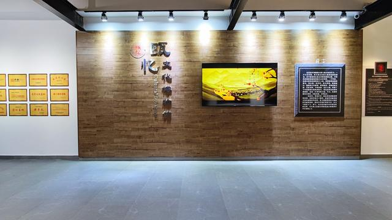

1938 年夏，28 岁的李得钊穿着粗布短褂，背着铺盖卷走进瓯窑小镇，自称 “来自青田的失业瓷工”，请求 “永利瓷坊” 的窑主收留。彼时的他，真实身份是中共温州中心县委派来的特派员，任务是在瓯窑工人中建立党组织。
初到瓷坊，李得钊每天和窑工一起蹲在窑炉旁，忍受 800℃的高温翻坯、装窑，手上磨出厚厚的茧子。他发现窑工们不仅要承受繁重劳动，还要被窑主克扣工资，更要面对日军随时可能来掠夺青瓷的威胁 ——“一碗糙米饭，半筐烂番薯，烧坏一窑瓷，罚跪一整天”，这是当时窑工生活的真实写照。李得钊利用休息时间，给窑工们讲 “抗日救国” 的道理，用瓷片在地上画地图，说 “日军就像窑里的杂质，不清除掉，好瓷永远烧不出来；国家的敌人不赶走，咱们永远过不上好日子”。
1939 年春节，窑主借口 “日军要增加青瓷订单”，强迫窑工每天工作 14 小时，还拖欠 3 个月工资。李得钊抓住机会，组织 20 余名窑工以 “讨要工资” 为由，围堵窑主家。他提出 “三点要求”：按时发工资、每天工作不超过 10 小时、日军来抢瓷时集体停工。窑主迫于压力答应条件，这次 “维权斗争” 让窑工们看到了团结的力量，李得钊趁机成立 “窑工互助会”，发展 12 名骨干加入中国共产党。

1940 年 3 月，中共瓯北县委在永利瓷坊的柴房成立，李得钊任县委委员。为了隐藏机关，他和窑工们在柴房墙壁上挖了一个暗格，用于存放文件和电台；还发明 “青瓷藏信”：把情报写在极薄的桑皮纸上，卷成细筒嵌入青瓷坯体，再用瓷泥封口，烧制完成后，除非打碎瓷器，否则根本发现不了。1941 年秋，日军计划对浙南根据地发动 “秋季清剿”，李得钊通过 “青瓷藏信”，将日军兵力部署、进攻路线等情报传递给游击队，使根据地提前做好准备，成功粉碎 “清剿”。
李得钊的革命实践，是“从群众中来，到群众中去”工作方法的典范，深刻印证马克思主义 “人的本质是社会关系的总和”。他放弃知识分子的身份，以 “窑工” 身份融入群众，正是因为认识到 “物质生产实践是人类最基本的实践活动”—— 窑工的生产劳动（物质实践）是他们最核心的社会关系，只有参与其中，才能真正了解其需求，激发其革命意识。此外，“青瓷藏信” 的创新，体现 **“意识的能动作用”：革命理论不是僵化的，而是要与具体的物质生产场景结合，才能转化为实际的斗争力量；而窑工们对李得钊的掩护，则印证“人民群众是革命的主体”**，没有群众的支持，孤立的革命个体难以生存和发展。
返回